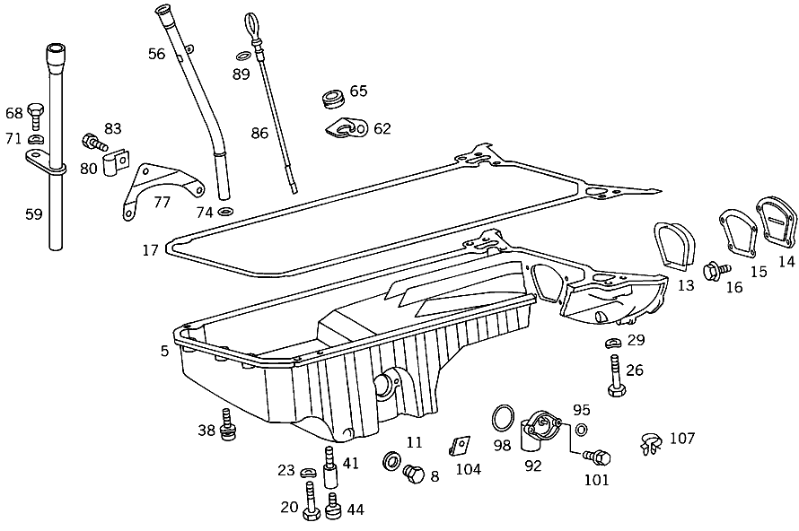

| № | Артикул | Название | Кол. | Примечание |
|---|---|---|---|---|
| 5 | A 103 010 05 13 | Поддон масляный | 1 | |
| 8 | A 601 997 02 30 | - ЗАГЛУШКА РЕЗЬБОВАЯ | - | |
| 8 | A 111 997 03 30 | - Пробка, первая заправка | 1 | СЛИВ МАСЛА |
| 11 | N 007603 014106 | - Уплотнительное кольцо | 1 | 14X20-CU |
| 13 | A 102 014 00 33 | Запорная крышка | 1 | КРЫШКА МОНТАЖНОГО ОТВЕРСТИЯ |
| 17 | A 103 014 01 22 | ПРОКЛАДКА УПЛОТНИТЕЛЬНАЯ | - | |
| 17 | A 103 014 03 22 | ПРОКЛАДКА УПЛОТНИТЕЛЬНАЯ | - | |
| 17 | A 103 014 04 22 | Уплотнительная прокладка | 1 | МАСЛ.КАРТЕР К БЛОКУ ЦИЛ. ДВИГ. ASBESTFREI |
| 20 | N 304017 006020 | Винт с 6-гранной головкой | 24 | МАСЛ.КАРТЕР К БЛОКУ ЦИЛ. ДВИГ.; M6X20 |
| 20 | N 304017 006020 | Винт с 6-гранной головкой | 21 | МАСЛ.КАРТЕР К БЛОКУ ЦИЛ. ДВИГ.; M6X20 |
| 20 | N 000931 006118 | Винт | 3 | МАСЛ.КАРТЕР К БЛОКУ ЦИЛ. ДВИГ. |
| 20 | N 000931 006131 | Винт | 3 | МАСЛ.КАРТЕР К БЛОКУ ЦИЛ. ДВИГ. |
| 23 | N 000137 006204 | Пружинная шайба | 30 | МАСЛ.КАРТЕР К БЛОКУ ЦИЛ. ДВИГ. |
| 26 | N 000931 008266 | Винт | 4 | МАСЛ.КАРТЕР К БЛОКУ ЦИЛ. ДВИГ. |
| 29 | N 000137 008204 | Пружинная шайба | - | |
| 29 | N 000137 008212 | Пружинная шайба | 4 | МАСЛ.КАРТЕР К БЛОКУ ЦИЛ. ДВИГ. |
| 38 | N 914020 006003 | Винт с неспадающей шайбой | 5 | МАСЛ. КАРТЕР НА КРЫШКЕ БЛОКА ЦИЛ СПЕРЕДИ |
| 56 | A 103 018 01 16 | Направляющая трубка | 1 | ЩУП МАСЛЯНЫЙ |
| 56 | A 103 010 02 66 | Направляющая трубка | 1 | ЩУП МАСЛЯНЫЙ |
| 62 | A 103 018 00 40 | Держатель | 1 | НАПРАВЛ. ТРУБА НА ВПУСКН. КОЛЛЕКТОРЕ |
| 65 | A 116 997 29 81 | втулка | 1 | НАПРАВЛЯЮЩАЯ ТРУБКА МАСЛОМЕРНОГО ЩУПА |
| 74 | A 017 997 16 48 | Кольцевая прокладка | 1 | НАПРАВЛЯЮЩАЯ ТРУБКА К МАСЛЯНОМУ КАРТЕРУ |
| 86 | A 602 010 00 72 | ЩУП МАСЛЯНЫЙ | - | |
| 86 | A 102 010 04 72 | Маслоизмерительный щуп | 1 | ЗЕЛЕНЫЙ |
| 89 | A 006 997 26 45 | - Уплотнительное кольцо | 1 | |
| 92 | A 124 542 00 17 | Датчик уровня масла | 1 | ВЫКЛЮЧАТЕЛЬ УРОВНЯ МАСЛА |
| 95 | A 017 997 58 48 | - Уплотнительное кольцо | 1 | |
| 98 | A 012 997 22 48 | УПЛОТНИТ. КОЛЬЦО | - | |
| 98 | A 013 997 67 48 | УПЛОТНИТ. КОЛЬЦО | - | |
| 98 | A 015 997 39 48 | Уплотнительное кольцо | 1 | ВЫКЛЮЧАТЕЛЬ УРОВНЯ МАСЛА |
| 101 | N 914005 006009 | Винт с неспадающей шайбой | - | |
| 101 | N 304017 006019 | Винт с 6-гранной головкой | 2 | ВЫКЛЮЧАТЕЛЬ УРОВНЯ МАСЛА К МАСЛ.КАРТЕРУ; M6X25 |
| 104 | A 102 159 26 40 | Держатель | 2 | КАБЕЛЬ ДАТЧИКА УРОВНЯ МАСЛА НА МАСЛ. КАРТЕРЕ |
| 107 | A 000 995 54 44 | хомут | - | |
| 107 | A 000 995 60 44 | Держатель хомута | 2 | КАБЕЛЬ ДАТЧИКА УРОВНЯ МАСЛА НА МАСЛ. КАРТЕРЕ; 6.5X12.8 MM |
Позиций: 35 · подписано на схемах: 35 · колесо — плавный зум в курсор, перетаскивание — пан, двойной клик — зум, клик по артикулу — скопировать.